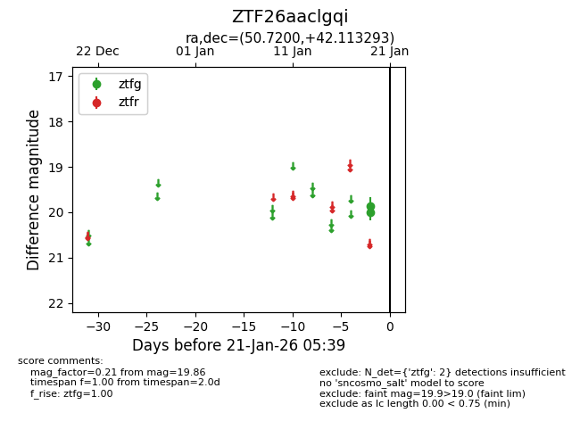
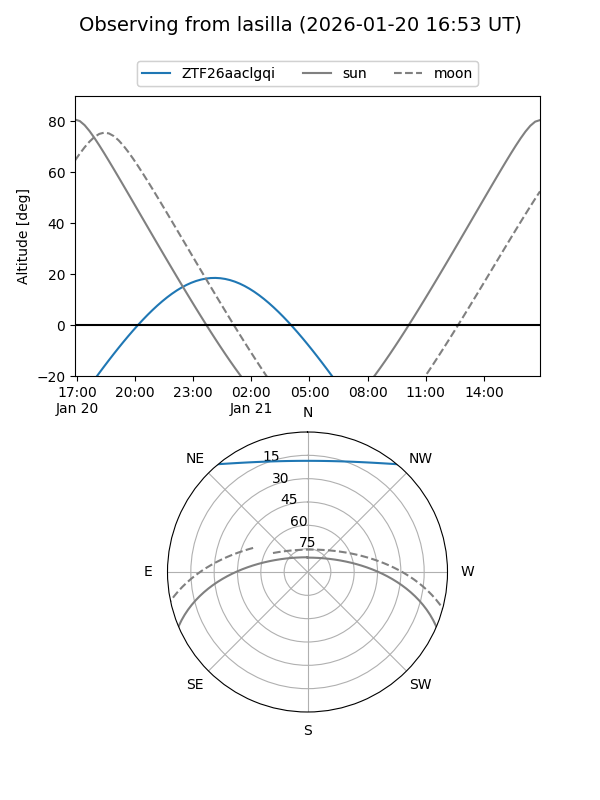
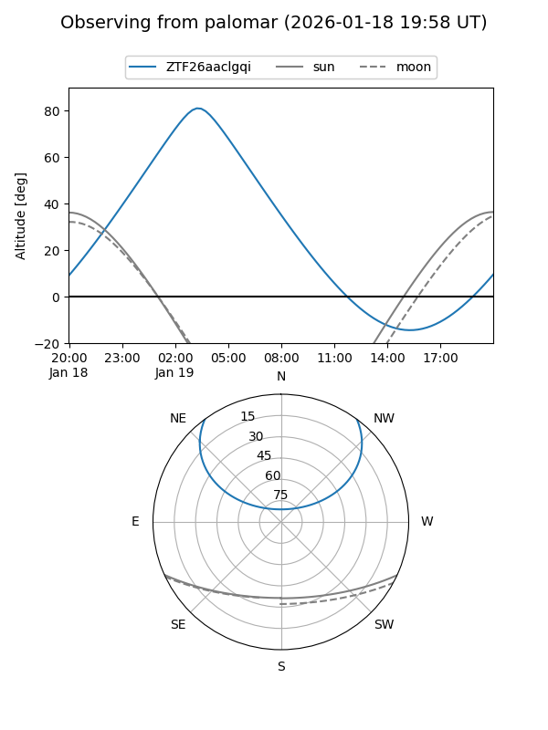

ZTF26aaclgqi
Target ZTF26aaclgqi at 2026-01-19 05:40
Aliases and brokers:
FINK: link
Lasair: link
ALeRCE: link
alt names
ZTF26aaclgqi (ztf,fink_ztf)
Coordinates:
equatorial (ra, dec) = 50.7200,+42.11329
equatorial (HMS+DMS) = 03:22:52.79,+42:06:47.85
galactic (l, b) = (150.7222,-12.44249)
Flags:
Photometry:
last ztfg=19.86
1 ztfg detections
Lightcurve

Visibility


Additional plots